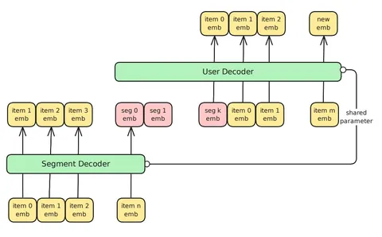

Сегодня разберём недавнюю статью от Meta* на тему сжатия историй в sequential рекомендательных моделях.
Авторы исследуют, как сжимать long-term-историю пользователя так, чтобы её можно было эффективно обрабатывать на инференсе и при этом не потерять в качестве. Это не новая архитектура, а скорее фреймворк или метод сжатия истории, который можно применять к разным моделям. Например, в статье рассматриваются HSTU и HLLM.
Проблема
Sequential recommender обычно строится на трансформерной архитектуре, которая страдает от квадратичной сложности механизма аттешнна. Из-за этого обрабатывать длинные последовательности вычислительно дорого, хоть они и приносят стабильный профит.
В релевантных работах эту проблему решают в два этапа: сначала long-term-историю сокращают (например, семплируют или кластеризуют события), а затем объединяют с последними событиями и прогоняют через модель. В статье приводят примеры подходов KuaiFormer, SIM, TWIN V2.
Идея
Авторы предлагают новый подход — сжимать историю с помощью выучиваемых токенов (personalized experts).
Длинную историю разбивают на сегменты — например по сессиям, дням или фиксированному числу событий. Затем каждый сегмент сжимают в несколько токенов-«экспертов», которые используются для дальнейших предсказаний. При этом последний сегмент истории на момент предсказания не сжимается — модель видит его полностью.
Обучение
Обучение авторегрессивное, используется специальная аттеншн-маска: каждый токен может смотреть на предыдущие токены своего сегмента и на «экспертов» из предыдущих сегментов, при этом сами токены этих сегментов скрыты маской.
Модель обучается стандартно на задачу next item prediction, при этом для «экспертов» лосс не считается.
На инференсе сегменты обрабатывают последовательно, а key- и value-эмбеддинги сжимающих токенов сохраняются. При предсказании следующего айтема используют только текущий сегмент и сохраненные key и value «экспертов» с предыдущих сегментов. Благодаря этому пропадает необходимость обрабатывать всю long-term-историю как одну длинную последовательность.
Интересно, что на обучении появляется лишь небольшой оверхед из-за добавленных токенов, однако на инференсе выигрыш существенный: в экспериментальном сетапе получают примерно четверть от исходной вычислительной стоимости.
Эксперименты
Они проводятся на двух датасетах:
- MerRec — e-commerce датасет из Mercari;
- EB-NeRD — новостной датасет из газеты Ekstra Bladet.
Метод почти полностью сохраняет качество моделей на полной истории и заметно превосходит варианты, где используется только recent-история. На MerRec метрики даже немного лучше бейзлайна с полной историей.
Авторы также показывают, что количество «экспертов» почти не влияет на качество, а сжатое представление long-term-истории можно переиспользовать довольно долго без заметной деградации. Лучше всего сработала такая схема: вставить всех «экспертов» после одного большого претрейн-сегмента.
Как оказалось при анализе результатов, «эксперты» часто содержат информацию по небольшому набору айтемов из истории, релевантных таргетному. Например, для айтема “LEGO” среди наиболее важных элементов из истории оказываются другие LEGO-товары.
Исходный код доступен на GitHub.
@RecSysChannel
Разбор подготовил
___
Компания Meta признана экстремистской; её деятельность в России запрещена.
